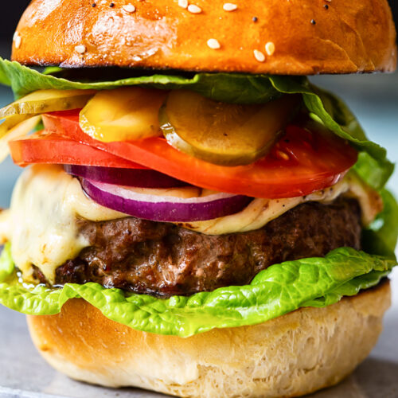

Homemade Cheeseburger

Description
Everybody loves a good cheeseburger. And it’s not hard to know why! One bite of the soft, slightly sweet bun with a perfectly seasoned meat patty, the perfect combination of sauces and a burst of crisp pickle in these homemade burgers and anyone would be hooked!
This is the best homemade cheeseburger that money can buy!
Ingredients
- Ground beef; the fattier, the better.
- Salt and pepper. Don’t be shy, use a generous amount!
- Olive oil. A little olive oil for cooking.
- Brioche buns.
- American burger cheese. Use a proper burger cheese from the supermarket- or try cheddar, tasty or Colby
- Brown onion. Finely chop the onion as small as you can.
- Ketchup.
- American mustard.
- Dill pickles.
Steps
- Combine the ingredients for your burger patties into a bowl and mix well to combine.
- Divide the mixture and shape into patties
- Cook over a medium heat, ensuring you don’t push down on the burgers while cooking and only turn them once.
- Add the cheese and let it melt
- Let the patties rest before adding them to your Brioche Buns and topping with pickles, onion, mustard and tomato sauce.
Back to home